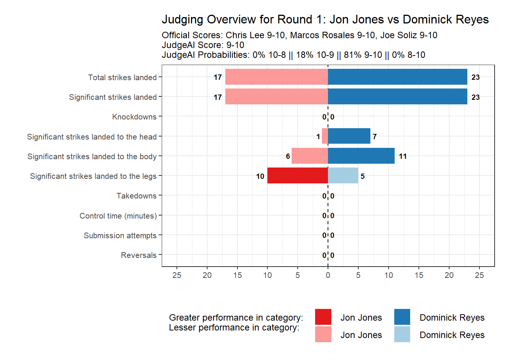
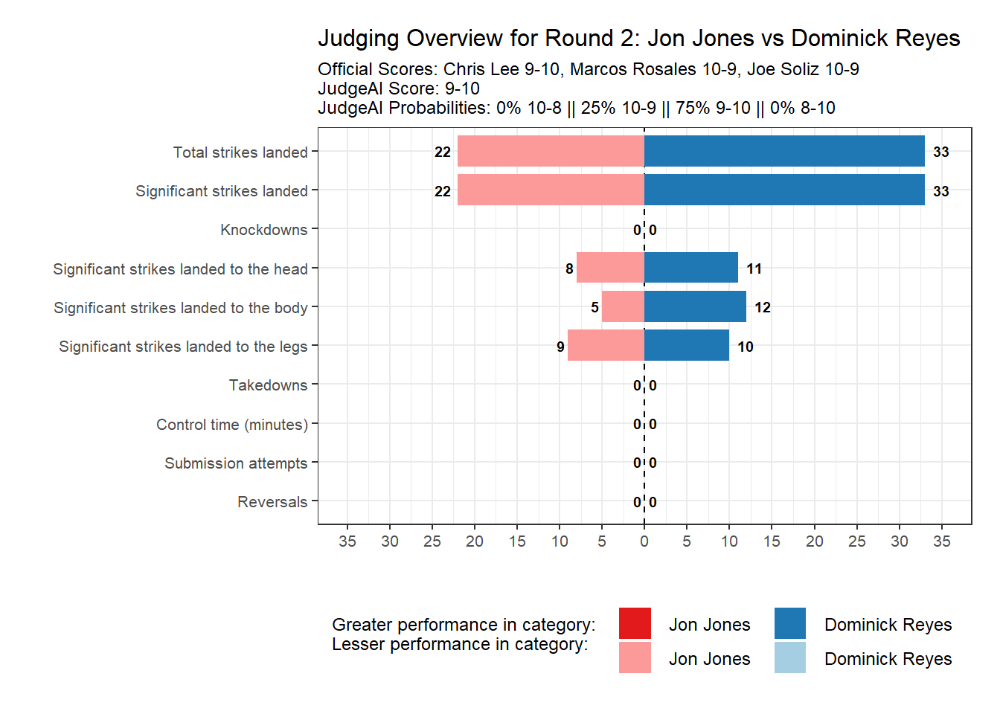
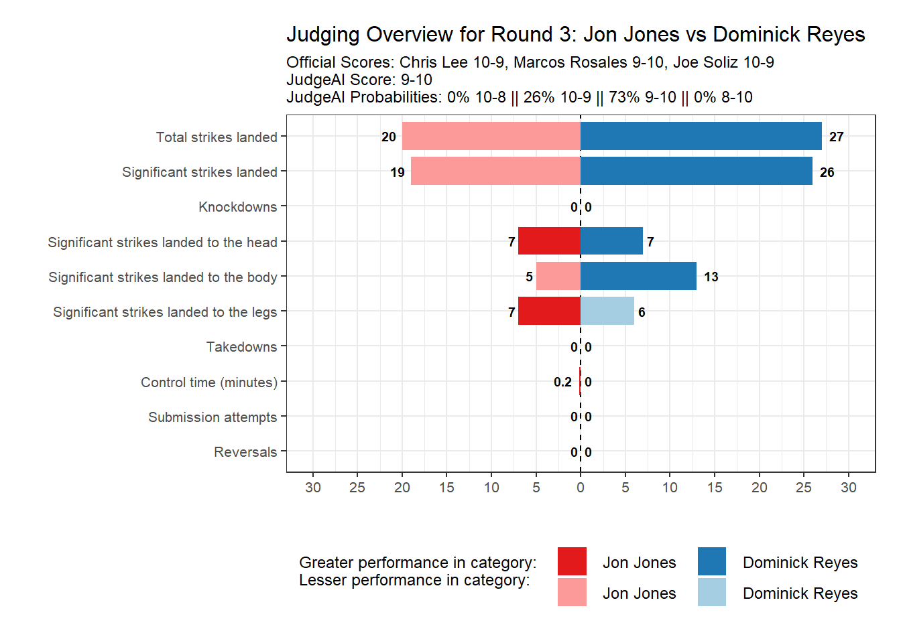
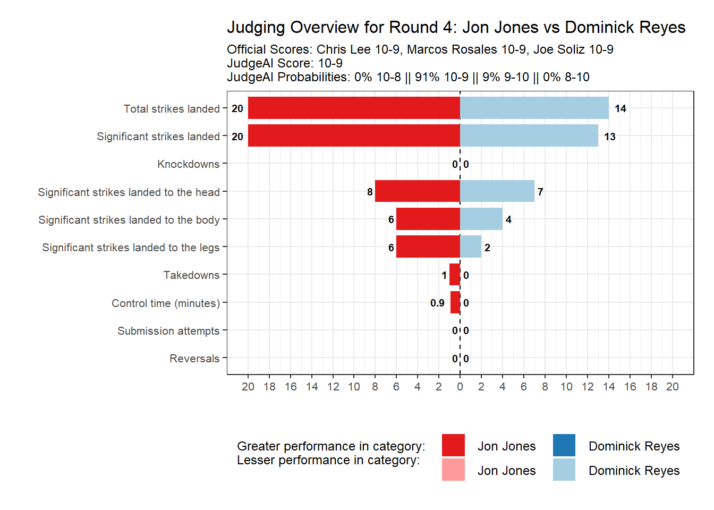
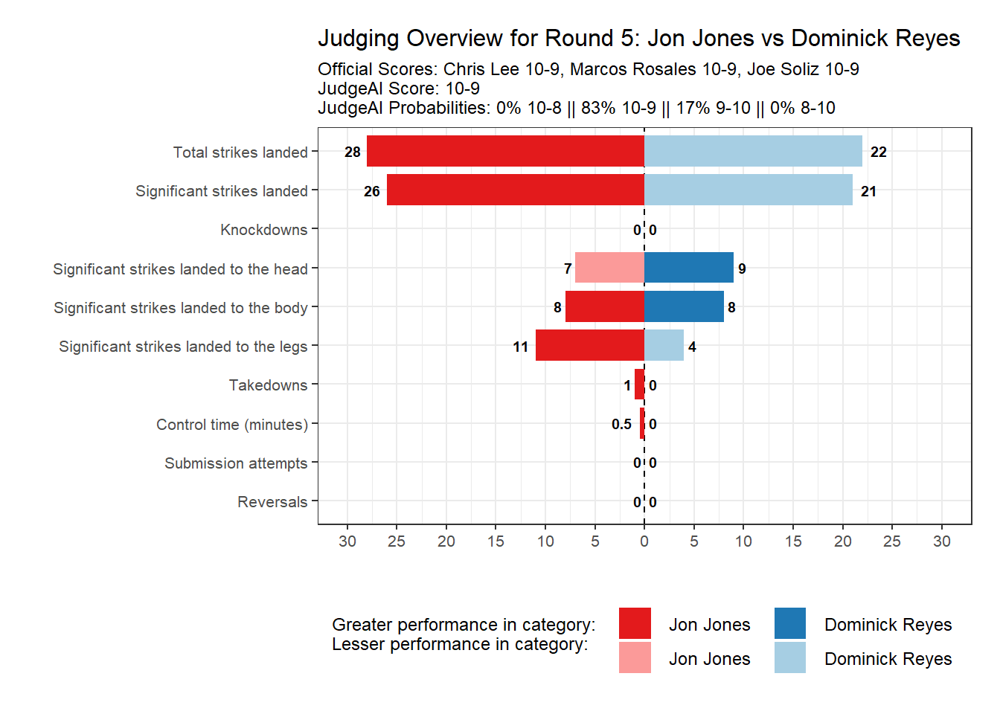
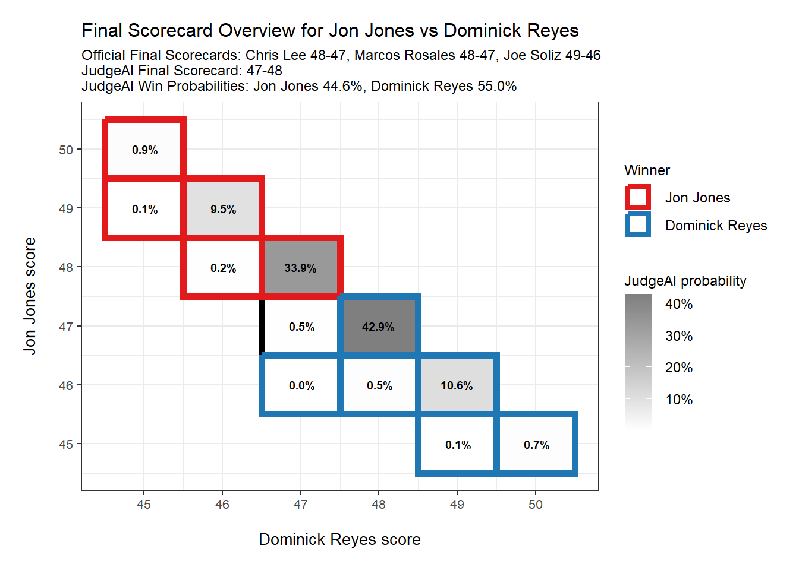

Introduction
In my previous blog post, I introduced JudgeAI, a machine learning algorithm that uses round-level statistics to predict judges’ scores by round in the UFC. That post illustrated in detail how JudgeAI was built and how it performs across time. Overall, the model provides well-calibrated round win probabilities and is able to predict round scores with high accuracy. I strongly suggest reading that post if you are interested in understanding the methodological details of JudgeAI. Alternatively, if you’re interested in a quicker summary of the details of an earlier version of the model, you can check out my posts on Reddit and Twitter - those social media posts combine the information presented in this blog post and my previous post. This post largely assumes you either understand the technical details of JudgeAI or do not care about such details - either is perfectly fine.
This post seeks to extend JudgeAI by leveraging its round score probabilities to produce a probability distribution of all possible final scores. I hope audiences of all types find this post approachable. We explore the methodology by taking a look at the Jon Jones vs Dominick Reyes fight from UFC 247 on February 8, 2020, which was a unanimous, but controversial, decision by the judges. I also include a brief methodology section for those interested in how the round score probabilities are aggregated to produce final scorecard predictions.
As we will see, using JudgeAI’s round score probabilities to generate a distribution of final scores is a powerful way to utilize the underlying uncertainty in the round-level scoring, and then propagate that uncertainty across rounds, to understand how likely or unlikely each possible final score is. It also allows us to move away from thinking about discrete scores and move towards thinking probabilistically about judging decisions.
Case study: Jon Jones vs Dominick Reyes
Round 1
The figure below shows a number of statistics from the first round of Jones vs Reyes. Note that JudgeAI includes many more features than those shown here. The figure also displays the score given by each judge, the score given by JudgeAI, and JudgeAI’s probability of each score in 10-9, 10-8, 9-10, and 8-10.
We see that Reyes landed more significant strikes and only absorbed a single strike to the head. All 3 judges and JudgeAI scored this round 9-10 in favor of Reyes. Also, JudgeAI shows high confidence in its predicted score by placing an 81% probability on the majority of judges giving that score.
Round 2
The figure below shows round 2. We see that Reyes landed 50% more significant strikes than Jones, and he landed more strikes to each of the head, body, and legs. JudgeAI again scored this 9-10 to Reyes. However, 2 of the 3 judges scored the round 10-9 to Jones.
It is important to note here that JudgeAI is not perfect. The model identifies broad trends in the relationship between round-level statistics and judges’ scores. Here the model is essentially saying that rounds with these striking differentials (plus all other statistics considered but not shown) go to the fighter who landed more strikes, which is Reyes here, around 3 out of every 4 times. While JudgeAI placed a high probability on Reyes winning this round, we cannot say for sure that 2 of the judges got this round wrong. Though striking differentials often correlate with damage dealt, for example, the model does not perfectly account for this. It is possible that Jones dealt more damage even though he landed fewer strikes.
Finally, notice that JudgeAI was less certain about this 9-10 score than in the previous round. There is uncertainty in round-level scoring because judges are subjective and see different things in each round. This uncertainty propagates across rounds and can result in seemingly strange final scores. Hence, it is more important to focus on JudgeAI’s score probabilities than its predicted score of 9-10.

Round 3
Round 3 scores and statistics are displayed in the figure below. We see that Reyes again landed more significant strikes than Jones, and again, JudgeAI scored this round 9-10 to Reyes. However, 2 of the 3 judges scored this round 10-9 to Jones.
Over rounds 2-3, either JudgeAI missed some important factor(s) in the fight, like damage dealt discrepancies, or it is safe to say that the judges were not doing Reyes any favors. The judges were split on the last 2 rounds, which suggests these rounds were tight, even though Reyes had the striking advantage on paper in both rounds.

Round 4
The figure below shows round 4. We see that Jones landed more strikes than Reyes overall and to each of the head, body and legs. In addition, Jones landed the only takedown of the round and accumulated nearly 1 minute of control time. JudgeAI scored this round 10-9 to Jones with a very high probability, and all 3 judges agreed.

Round 5
The final round is displayed below. Jones landed more significant strikes than Reyes and secured a takedown with around 30 seconds of control time. As in the last round, JudgeAI scored this round 10-9 to Jones with a high probability, and all 3 judges agreed.

Methodology: computing final scorecard probabilities
This section provides a quick overview of the methodological details involved in computing the forthcoming final score probabilities. If that is not something that interests you, feel free to skip to the next section.
Recall that our goal is to utilize JudgeAI’s round score probabilities to produce a probability distribution of all possible final scores. Such a distribution will provide more information than a discrete final score, like 48-47. Instead, the distribution will show how likely or unlikely each final score is after accounting for the uncertainty in round scoring that propagates across rounds.
Since JudgeAI returns predicted probabilities for each score in 10-9, 10-8, 9-10, and 8-10, mathematically deriving the probability of each possible final score after 3 or 5 rounds is cumbersome. Hence, we instead use a Monte Carlo method to numerically compute final scorecard probabilities. That is, we essentially simulate the scoring of each round many times using JudgeAI’s round score probabilities and then see what proportion of simulated fights had each final score.
The computational algorithm employed is below.
- Draw 1 sample score for each round using JudgeAI’s corresponding round score probabilities. That is, for each round, draw a sample score from the possible scores 10-9, 10-8, 9-10, and 8-10 where the probability of drawing each possible score is set to the corresponding round score probability provided by JudgeAI.
- Add each fighter’s sample scores together across rounds to generate the sample final score for the fight.
- Repeat the 2 steps above 100,000 times. This yields 100,000 final score samples.
- Compute final scorecard probabilities by dividing the number of times each final score appears in the samples by 100,000.
Jones vs Reyes final scorecard
The figure below shows the final scorecard for the fight and, according to JudgeAI coupled with the Monte Carlo method outlined above, the probability of each possible final score. We see that all 3 judges had Jones winning. However, if we add up JudgeAI’s predicted scores by round, we find that JudgeAI scored the fight 47-48 in favor of Reyes. Without properly aggregating JudgeAI’s round score probabilities, our analysis would end here, but fortunately, we recover a probability distribution of final scores that enables much more in-depth analysis.
Using the aforementioned algorithm to aggregate round score probabilities, we see that the most likely final score of 47-48 in favor of Reyes is expected to occur with a 43% probability. In other words, JudgeAI predicts that over many fights with the exact same round-level statistics as this fight, Reyes would win the decision 47-48 around 43% of the time.
Further, Reyes’ win probability (computed by adding up the appropriate final score probabilities) was 55%. Again, this means that over many fights with identical round-level statistics, JudgeAI predicts that Reyes would win via decision more often than not.

Even though JudgeAI has Reyes winning this fight, notice that the win probability was barely over 50%. According to JudgeAI, the two most dominant rounds were 4 and 5, both of which went to Jones. This means that JudgeAI was more certain that the judges would also give these rounds to Jones, which turned out to be true as Jones won those rounds 10-9 on every scorecard. Since rounds are scored independently, once a fighter in a 5 round fight secures 2 dominant rounds, the math begins moving in that fighter’s direction. As we saw, JudgeAI had Reyes winning the other 3 rounds, which should be enough to win the decision. However, since Reyes’ round wins (according to JudgeAI) were less dominant, it was more likely that some judges would award some of those rounds to Jones, which is also what we saw.
This is the difference between using JudgeAI to score rounds probabilistically vs keeping track of one’s own personal round scores at home. The latter can lead to confusion or anger when comparing one’s own final score to that of the judges, while the former is more likely to help us understand how likely or unlikely a particular judge’s final score was. In this case, according to JudgeAI, two judges scoring the fight 48-47 to Jones was not terribly egregious, but the 49-46 score to Jones was relatively unlikely.
In the end, after accounting for the round-level scoring uncertainty, JudgeAI had Reyes winning with a 55% probability, which is quite low coming from a model that had Reyes winning 3 rounds. In this case, the uncertainty captured by JudgeAI lowered Reyes’ win probability from what we might have expected and happened to coincide with Jones winning the fight on each judge’s scorecard. Though JudgeAI still disagrees with the judges on the winner of the fight, the model only awarded Reyes a 55% win probability, which makes this fight a toss up.
While the judges all agreed that Jones won the fight and JudgeAI had the fight as a toss up, the community seems to feel much more strongly that Reyes won. According to MMADecisions, which posts the official scorecards along with scores provided by members of the media and by fans, 14 of the 21 media members scored the fight 47-48 in favor of Reyes. The other 7 members of the media scored it 48-47 to Jones. In addition, as of the writing of this post, 77% of the fans who submitted scores had Reyes winning, the majority of which scored it 47-48 to Reyes. The scores provided by the community align with the two most likely final scores according to JudgeAI, but the share of media members and fans awarding the fight to Reyes is much higher than JudgeAI’s win probability for Reyes. Thus, the actual final scorecard submitted by the judges was generally much more surprising to media members and fans than it was to JudgeAI, which is likely due to the probabilistic decision-making of JudgeAI that is typically challenging for humans, and especially passionate fans, to replicate on their own.
Conclusion
The purpose of this post was not to argue that Reyes should have won the Lightweight title against Jones at UFC 247. Instead, this post serves to illustrate how the round score probabilities provided by JudgeAI can be aggregated to produce a probability distribution of final scores that is both unique and insightful.
We saw how using JudgeAI’s discrete round scores to score the fight resulted in a final score that did not match any of the judges on the final scorecard. However, leveraging JudgeAI’s round score probabilities allowed us to think probabilistically about how likely each final score might be. That is, we saw that Jones won the 2 most dominant rounds and thus only needed to win 1 of the 3 more competitive rounds on the judges’ scorecard. Hence, even though JudgeAI had Reyes winning the 3 more closely contested rounds, it only gave Reyes a 55% chance of winning the decision because of all the uncertainty in how judges were likely to score those 3 rounds. Media members and fans had Reyes winning at significantly higher rates than JudgeAI. While the resulting frustration among members of the media and fans may or may not be justified, I think that scoring a fight probabilistically with JudgeAI provides the community with valuable insights that are tough to get anywhere else.